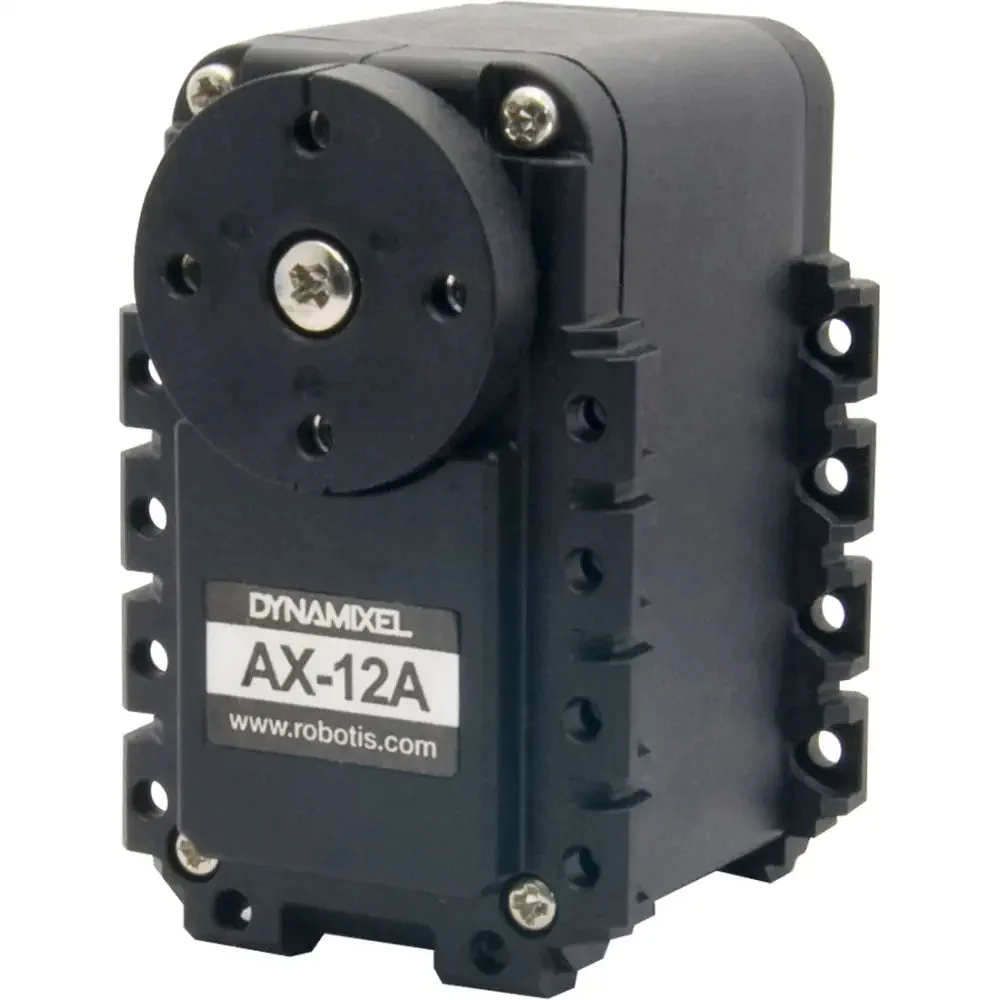
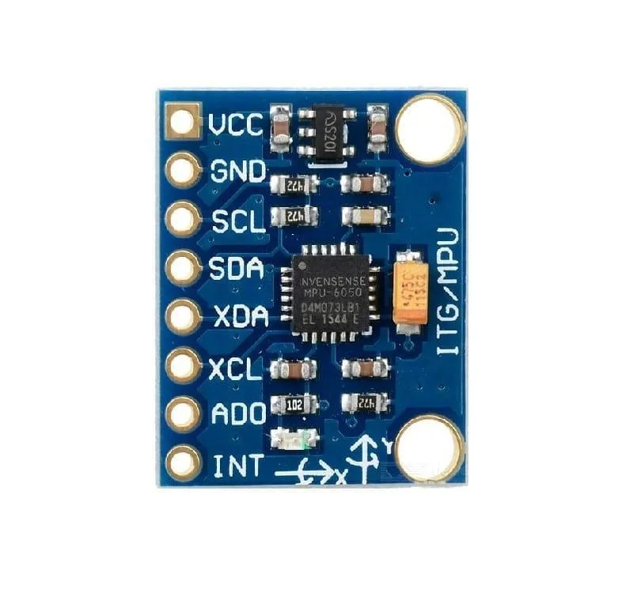
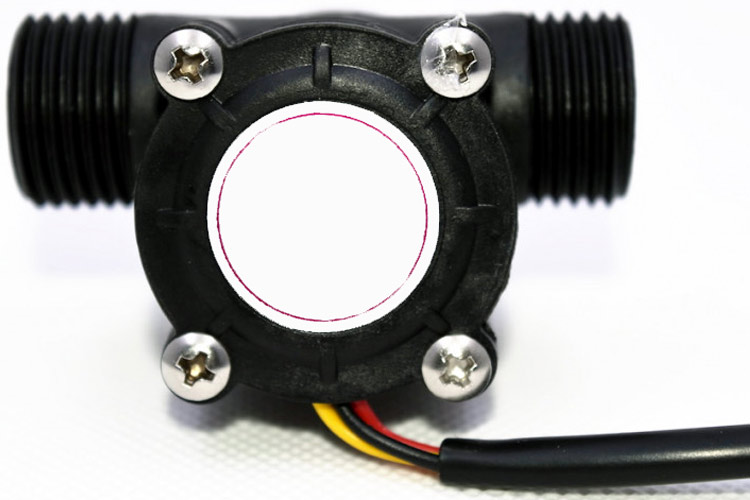
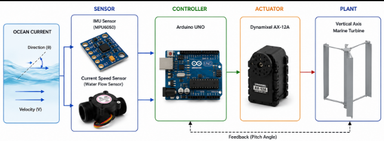

Current Turbine
Pitch Control System
(Mechanical Focus)
Development of a mechanical pitch control system using a servo actuator that enables the marine current turbine to automatically adjust the blade orientation according to changes in the current direction, thereby improving hydrodynamic performance, energy conversion efficiency, and overall system stability.

Vertical Axis Turbine
-15° ~ 15°
PLA (Polylactic Acid)
3 - 5 m
Desain Mekanik

Vertical Axis Marine Current Turbine Prototype
The turbine prototype was designed using a PLA (Polylactic Acid) frame integrated with a servo-actuated pitch mechanism. The blade pitch is automatically adjusted according to the direction of the marine current to improve hydrodynamic performance and energy conversion efficiency.
Aktuator

DYNAMIXEL AX-12A
Smart servo actuator used to adjust the blade pitch angle based on control commands generated by the control system.
Sensor

Compass / IMU
Measures the turbine orientation in real time to provide input for the control system, allowing automatic adjustment of the blade pitch according to the direction of the marine current.

Current Speed Sensor
Measures the marine current velocity and provides input to the control system for automatic blade pitch adjustment.
Both sensors operate synchronously to provide real-time turbine orientation and marine current velocity data, enabling the pitch control system to automatically adapt to changing current conditions.
Diagram Sistem

Software

Autodesk Inventor
Mechanical Design

Arduino IDE
Programming
DYNAMIXEL Wizard
Servo Configuration
Tujuan & Manfaat
Tujuan
- Automatically adjust the blade pitch angle
according to the
direction of the incoming marine current. - Maximize power output.
- Reduce dynamic loads acting on the turbine structure.
Manfaat
- Improve overall turbine efficiency.
- Extend the turbine operating range.
- Enhance operational safety.